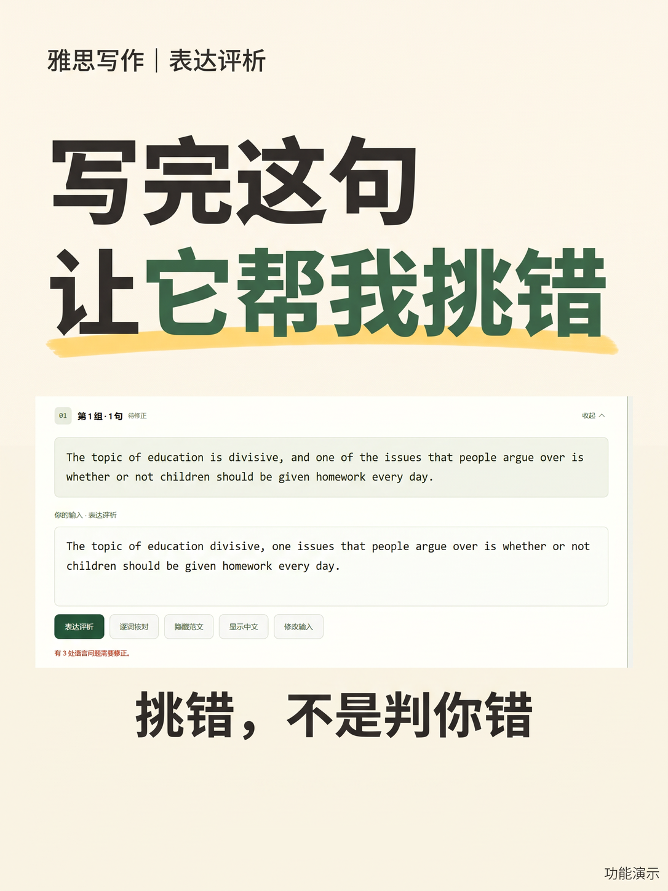

1 / 3产品操作演示；图中表达评析为 AI 生成的参考意见，不是官方评分或考试成绩。
写完一句，看看表达
写完这句，让它帮我挑错
练习雅思写作时，可以写完一句后使用表达评析，分别参考语言是否正确、意思是否与范文一致。AI 意见仅供参考，建议结合上下文自行复核。
写完一句，我以前会直接去对答案。
但我不想一字不差地抄范文——那样练下去，写出来的还是别人的句子。
所以我写完会先点「表达评析」：它分开看两件事，语言对不对，原意有没有跑偏。
图里这个教育话题的示范👇
漏了系动词 is、one issues 单复数用错、还用逗号连了分句——
三处都标出来了，每处写清原因。
最要紧的是，它不把我改回范文原句。
换个说法，它回我一句：表达正确，保留了范文原意。
AI 给的是参考，我还是自己再读一遍。
你们写完会先检查哪一处？💬
#雅思写作 #雅思作文 #雅思范文 #雅思备考 #英语自学 #作文批改